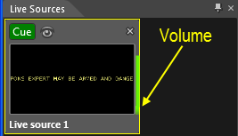
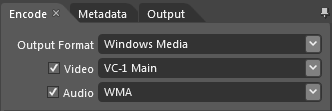
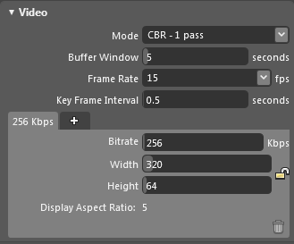

Creating Your Own Internet Morse Code Broadcast
You can use the Morse News application together with the Microsoft Expression Encoder to create an internet broadcast of the sound that is generated by your running copy of Morse News. This would best be run on a server machine since any sound that is played through the system's audio is transmitted through the streaming channel to listeners. If you have a computer that is not used interactively, you can set up our own Morse code radio station that transmits news etc. to listeners. For an example, you can listen to the Morse Code News broadcast that the author sends.
This page does not include detailed or click-by-click instructions on using Microsoft Expression Encoder. Sorry but that would be just too much! Hopefully, though, the info that I have written up here, and the images below, are enough to get you going.
The Basics
Expression Encoder has the ability to serve streams over the internet without a separate server like IIS. It can be set up to stream the audio that you hear through your computer's speakers, the so-called "stereo-mix" audio. Also, it can be set up to stream video from an area that it captures from your computer's screen. The idea here is to have it stream the audio from Morse News as well as the crawling text area at the bottom of the Morse News window. The result is a video/audio streaming program that lets users see what is being sent and hear the Morse code at the same time. Here's what it looks like in the WIndows Media Player:
Setting Up Morse News
The first thing to do is to get your Morse Code broadcast set up with the feed(s) and sound characteristics you want for your broadcast. Adjust the signal level as well as the noise, static and fading controls as you wish, and listen for a while to make sure you have it like you want.
Setting Up Expression Encoder
- Install Microsoft Expression Encoder 4.0 SP2 (or later). The free version is fine, you do not need to pay for the Pro version!
- Download VideoJob.zip and save the enclosed file Morse Code Video.xej in
My Documents\Expression\Expression Encoder\Jobs. - Start Expression Encoder and open the Job file Morse Code Video. This will establish most of the settings you need.
- Click the little window at the top of the Live Sources column:

and you should see the video source info at the bottom of this column (don't worry about what shows in the little window yet):

- Change the Audio Device to Primary or your sound card.
- If needed, change the Audio Line to Stereo Mix.
- Start Morse News so that it is sending news and set its volume to a notch or two below max.
- Adjust the Volume control (in the bottom row) so that the yellow volume indicator rarely (if ever) reaches the top of the video preview area (100%), but so it is as high as practical. If you have fading enabled, watch the volume bar for a while, as it can vary over a large range!
- Click Pick Rectangle. Expression Encoder will minimize. Select the rectangle that contains the news crawler in Morse News. This will take a few tries to get just right. You can click the COnfigure button afterward to tweak the selection rectangle. Eventually you should see just the text crawling in the little Live Sources window as shown above.
- At this point you should be ready. For reference, here are some screen shots of the other important areas of Expression Encoder. First the encoding settings:



Next, the Metadata settings (change these for you!):

And finally the output settings:

You can change the port if you want, and feel free to change the max number of simultaneous connections, depending on the net bandwidth you have. - Click the Start button and Encoder should begin to encode the Morse video and sound. You should see something like this in the main center window of Encoder:

Tuning Into Your Broadcast
For a definitive test, launch Windows Media Player and open URL rtsp://your.ip.or.domain:9876/. If you changed the port, use that instead of 9876. The stream should start playing in 10-20 seconds.
In some players, you will need to use a URL prefix of mms:// instead of rtsp://. Those players are out of date as Microsoft deprecated the Microsoft Media Player (mms) protocol in favor of the Real Time Streaming Protocol (rtsp) in 2003 .
Firewall/NAT Issues
Most computers sit behind a NAT router where the local computers (the ones in your house/office) have non-routable addresses beginning with 192.168. These systems are unreachable from the Internet (outside your home of orrice) unless you set up port forwarding for port 9876 (or your chosen port) to go to the internal (192.168) address of the computer running Morse News and Expression Encoder. It is way beyond the scope of this document to cover NAT and port forwarding for servers behind a NAT firewall. Consult the copious info on the internet that covers these issues. Note that you can use a dynamic DNS service such as No-IP.com to give your Morse broadcast a permanent domain name even if your router's public address is a changing/dynamic address.
Players on Other Platforms
You should be able to find a good player for RTSP/MMS streams on any platform. Some of the ones that work well for me are:
- Android: VPlayer Video Player (Outstanding!)
- iOS: GoodPlayer (Good, but tricky to find the real time streaming URL input. Do not use H/W encoding)
- Windows: Windows Media Player, WinAmp, VLC Media Player
- Macintosh: QuickTime Player, VLC Media Player
- Linux: VLC Media Player